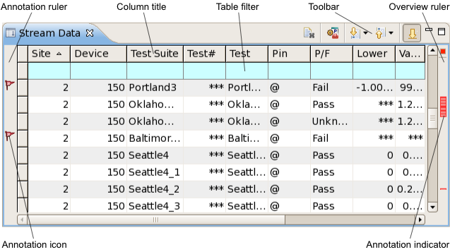
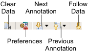

Stream data view
The stream data view displays all individual records that are summarized in the loaded system data log stream. You can use the stream data view to examine in detail the test results as they are logged.

In addition to the columns describing each data log entry, the stream data view contains a toolbar, configurable fail and alert marks in the left and right margins, and it has a shortcut menu. All four elements are described below.
Toolbar

The toolbar of a stream data view includes these buttons:
- Clear Data: Removes all current entries from this view.
- Preferences: Opens the Stream Data preference page.
- Next Annotation: Selects the next row that contains an annotation (fail indicator or
alert).
The drop-down list of the button lets you check an uncheck the annotation types. If an annotation type is unchecked, SmarTest does not jump to this type of annotation.
For example, if Failed Test is not checked in the drop-down list, SmarTest jumps only to rows containing alerts.
- Previous Annotation: Selects the previous row that contains an annotation (fail
indicator or alert).
The drop-down list of the button lets you check an uncheck the annotation types. If an annotation type is unchecked, SmarTest does not jump to this type of annotation.
- Follow Data: Whether the view automatically scrolls to the bottom when new data is
added.
When this button is highlighted, the view automatically scrolls to the bottom to show new data. When it is not highlighted, it does not scroll by itself and always shows the section to which you have scrolled.
Table
The table in the stream data view displays the data from the system data log stream. Each row displays one log entry. Clicking any field in a row selects the entire row (for example, for copying it).
The topmost row in the table (with a cyan background) is the table filter that lets you restrict which rows are displayed in the table by entering conditions. See Table filter for details.
The stream data view table contains these columns:
- Testflow: The testflow number, which is created by the Integrated Result Tool and increases by 1 every time the testflow is run.
- Wafer: The number of the wafer on which the device is located.
- Site: The number of the site to which the device belongs.
- Device ID: The device ID.
- Device: The number of the device. This number is assigned automatically by the Integrated Result Tool.
- Part ID: The part ID.
- Part Txt: The part description text (PART_TXT).
- Test Suite: The test suite name.
- Test#: The test number.
- Pattern Name: The name of the pattern used in the test.
- Test: The test name.
- Pin: The name of the tested pin.
- P/F: Whether the test passed or failed.
- Lower: The lower limit that was specified for the test.
- Unlabeled column (LS): The comparison operator for the lower limit
- Value: The measured test value.
- Unit: The unit for the value.
- Unlabeled column (US): The comparison operator for the upper limit
- Upper: The upper limit that was specified for the test.
- Time: The execution time of the test. (Due to algorithmic overhead, this number may not be the exact actual execution time.)
- TS Time: The execution time of the test suite. (Due to algorithmic overhead, this number may not be the exact actual execution time.)
- Print to Datalog: Any text that has been logged with the comment parameter of the PUT_DATALOG API.
- Test Text: Data logged to the TEST_TXT field in the Multiple-result Parametric - or Parametric Test - Record (see TESTSET).
Which columns are displayed and the order in which they are displayed can be set in the preferences. There, you can also specify the maximum number of rows that the view will display.
Clicking a column title sort the table by this column in ascending order (rows with
smaller values come first). This is indicated by a triangle  . Clicking again sorts the table by the column in descending order, which is indicated by
an upside-down triangle
. Clicking again sorts the table by the column in descending order, which is indicated by
an upside-down triangle  . Clicking again unsorts the table. (The rows are displayed in the order in which they
occur in the data store.)
. Clicking again unsorts the table. (The rows are displayed in the order in which they
occur in the data store.)
Marks in the annotation and overview rulers
The left and right margins of the tab contain indicators for failed tests and cells containing alerts.
The annotation ruler (the left margin) contains icons indicating rows with fails and alerts:
 The test summarized in this row failed for at least one device.
The test summarized in this row failed for at least one device. This row contains a cell with an alert.
This row contains a cell with an alert. This row contains both an alert and at least one failing test.
This row contains both an alert and at least one failing test.
You can disable icons for fails and/or alerts in the Annotations preference page. By default, both are enabled.
The overview ruler (right margin) contains a small colored rectangle for each row with a failed device and each row with an alert. Clicking a rectangle selects the corresponding row in the table. Hovering over a rectangle with the mouse displays a tooltip with the reason for the alert. Hovering over the small colored square in the upper right corner of the view displays a tooltip with the total numbers of failed rows and rows with alerts.
You can choose the colors in the Annotations preference page and disable one or both kinds of indicators. By default, indicators for alerts are yellow and indicators for fails are red; both kinds are enabled.
For more information on configuring fail indicators and alerts, see Highlighting specific data.
Shortcut menu
The shortcut menu of the stream data view contains these commands:
- Open Definition: Opens the testflow editor and selects the test suite
that has generated this log entry.
The testflow file must already be loaded into SmarTest.
- Open With: This submenu contains the Protocol Monitor command. Choosing it opens the data represented by the selected row in the Protocol Monitor view.
- Show in Test Summary: Displays the row in the Test summary tab that summarizes data from the test suite of the selected row.
- Refresh: Updates the system data log stream display with the latest logged data when it is paused (see below), but does not turn on automatic updating again, like Resume does.
- Pause: Stops automatic updating of tables displaying the system data log stream.
- Clear: Removes all current entries from this view.
- Width: This submenu includes the Autofit command that lets you make each column just wide enough to show all of its contents.
- Copy: Copies the selected rows to the clipboard as tab-separated text.
- Alerts: Opens the Alerts preference page.
- Preferences: Opens the Stream Data preference page.
Functional changes
- Introduced in SmarTest 7.2.0
- SmarTest 7.2.1: Added shortcut menu commands Open Definition and Show in Test Summary.
- SmarTest 7.2.1: Added sorting of the table.
- SmarTest 7.2.1: Added a preference option to limit the number of rows.
- SmarTest 7.2.1: Added a toolbar button to clear the view.
- SmarTest 7.2.1: Renamed some columns.
- SmarTest 7.2.2: Added Pattern Name column.
- SmarTest 7.2.3: Added Part ID and Part Txt columns.
- SmarTest 7.10.1: Added Test Text column